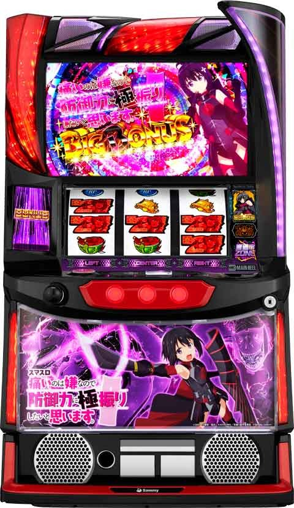

L痛いのは嫌なので防御力に極振りしたいと思います

[天井情報]
950G+α 無限高確率ZONE突入
リセット時 650G+α
リセット時初当たり単発の場合は次回天井も650G+αに短縮(単発抜けるまでは短縮のまま？)
[リセット判別]
Sammyのためガックン不可
朝イチは規定ゲーム数がランダムに加算あり。
据置時は内部依存で前兆発生。
[有利区間について]
不明
狙い目
[リセット狙い]
220Gから
リセ初当たり単発後 240Gから(更に単発続いてる場合でも短縮恩恵ありそう)
[ボーナス間天井狙い]
670Gから
以下、差枚プラス時はボーダー調整
差枚+1000枚以上 +40G
差枚プラス +20G
※スキル破壊王所持の場合はボーダーを80G下げれる
[ゾーン狙い]
150Gゾーン 130Gから
300Gゾーン 250Gから
※スキル破壊王所持の場合はボーダーを30G下げれる
[防御状態狙い]
ボーナス後は防御状態に移行。
示唆で押し引き出来そう。
ちょんぽりすたの防御状態の項目の防御状態示唆演出を要確認。
[有利区間切れ狙い]
不明
やめ時
ボーナス後は防御状態へ移行(見た目は通常)
基本は80Gくらいまで回すのが無難。
50G回した以降、示唆が弱くなったらやめ。示唆が続く様なら続行する感じ。
防御レベル3以上は少し長めに様子見。
詳細なやめ時について(個人的な見解含みます)
基本的には防御状態示唆が10G出なくなったら通常に落ちてそう。(示唆出なくても50Gは回す)
40G過ぎて防御状態示唆が出なくなったら50-55Gでやめ。
高確率ゾーン中に50G跨いだ場合は高確率ゾーン終わってから10Gは様子見。
防御レベル3以上まで行った時は念のため80Gまでは打った方が良さそう。
{kind=link}
その他
スキル破壊王について
{kind=link}
防御状態について
{kind=link}
参考元
基本情報
- メーカー: サミー
- 機械割: 97.9% 〜 113.0%
- 導入開始日: 2024年06月03日（月）
- ゲーム性概要: 人気作品「痛いのは嫌なので防御力に極振りしたいと思います。」がスマスロで登場。通常時はおもに高確率ZONE（CZ）からボーナスを目指し、ボーナス後に必ず突入する防御状態（CZの超高確的な状態）で高確率ZONEを引き当て、ボーナスとループさせるゲーム性。ボーナスが続くほど防御状態の継続期待度（防御力）がアップするところもポイントだ。


打ち方
打ち方・小役
打ち方（小役狙い）
［最初に狙う絵柄］

左リール上段付近にBARを目押し。
［BAR下段停止］ 成立役：ハズレorリプレイorベルorヒドラ目

［角チェリー停止］ 成立役：チェリーorヒドラ目or強ヒドラ目

チェリーは1枚、ヒドラ目はリプレイフラグなので払い出し枚数でも判別できる。
［スイカ上段停止］ 成立役：スイカorヒドラ目or強ヒドラ目

中段にベルが揃った場合は強ヒドラ目になる。
［ヒドラ上段停止］ 成立役：スイカorヒドラ目or強ヒドラ目

［レア役の停止例］

約1/64のヒドラ目が本機のゲーム性の軸となる重要な存在。左リールはどんな停止形からもヒドラ目の可能性があるところもポイントだ。例外もあるが、基本的に中・右リールにヒドラを狙ってヒドラ停止かつ小役が揃わなければヒドラ目、ヒドラの3つ揃いが強ヒドラ目になる。強めの演出が発生した時は中・右リールにヒドラ目を狙えばわかりやすくなる。
ボーナス中の防御スイカ（色目押し）

逆押しナビ発生時はナビされた絵柄を目押しして、スイカが揃えば成功。目押しコマ数はシビアではないので色目押しの感覚でアバウトに狙えばOKだ。失敗しても防御力はアップするが、枚数（15枚）は獲得できない。さらに、成功時の15枚はボーナス枚数から減算されないため、引けば引くほどお得だ！
変則押しはNG

ナビ非発生時は左1stでの消化を推奨だ。
ヒドラ目
ヒドラ目の抽選内容まとめ
| 状況 | 恩恵 |
|---|---|
| 通常時 | 高確率ZONEorエピソードボーナス直撃抽選 |
| 高確率ZONE中 | ボーナス濃厚 |
| 防御状態中 | 高確率ZONE当選の大チャンス 極・高確率の抽選もあり |
| ボーナス中 | スキル「機械神」獲得濃厚 |
確定役
強ヒドラ目と中段チェリーの恩恵
通常時の強ヒドラ目は無限の運営高確率or極・高確率となるため実質的にボーナス濃厚。中段チェリーはエピソードボーナス濃厚かつ約50%でフリーズ（確定画面でフリーズして暴虐エピソードへ）に当選する。フリーズが発生しなくても防御Lv.3スタートになるためいずれにせよ中段チェリーは強力だ。
中段チェリーの恩恵
| 恩恵 | 恩恵 |
|---|---|
| 停止した時点 | エピソードボーナス濃厚 |
| フリーズ発生率 | 約50% |
| フリーズなし時 | エピソードボーナス＋防御Lv.3スタート |
| フリーズあり時 | 暴虐エピソードボーナス（暴虐ZONEへ） |
強ヒドラ目の恩恵
| 状況 | 恩恵 |
|---|---|
| 通常時 | 無限の運営高確率or極・高確率 |
| 高確率ZONE中 | エピソードボーナス濃厚 ※極・高確率では暴虐エピソードボーナス |
| 防御状態中 | 無限の運営高確率or極・高確率 |
| ボーナス中 | 暴虐エピソードボーナス（暴虐ZONEへ） |
ボーナス中の強ヒドラ目で暴虐エピソードボーナスに当選した場合、当該ボーナス終了後に1G連で暴虐エピソードボーナスがスタートする。
解析情報通常時
小役関連
［設定差なし］小役確率
| 役 | 確率 |
|---|---|
| ハズレ | 1/1.6 |
| スイカ | 1/64.1 |
| チェリー | 1/99.9 |
| ヒドラ目 | 1/64 |
| 強ヒドラ目 | 1/4369.1 |
中段チェリー確率
中段チェリーは特殊リプレイ（1/16384.0）成立ゲームの一部で擬似遊技として出現。そのため、擬似遊技終了後はリール上でリプレイが揃う。出現時はエピソードボーナス濃厚かつ約50%で暴虐ZONE（暴虐エピソードボーナス）に当選する。
［高確中］スイカ・チェリー契機の高確率ZONE当選率
スイカとチェリーは高確滞在中にのみ高確率ZONEが抽選される。
内部状態関連
高確状態
おもにスイカやチェリーを契機に移行する高確状態で、 滞在中は各役の高確率ZONE当選率がアップ 。高確中は夕方ステージに滞在することが多い。保証ゲームは15Gで、16G目以降はハズレ時に転落を抽選。高確中に再度高確に当選した場合は保証ゲーム数が再セットされる。
高確性能
| 項目 | 内容 |
|---|---|
| 移行契機 | スイカ・チェリー |
| 保証ゲーム数 | 15G |
| 滞在中の恩恵 | 各役の高確率ZONE当選率がアップ |
| その他 | 保証ゲーム数消化後のハズレで転落抽選 |
［スイカ・チェリー成立時］高確移行率
| 設定 | 移行率 |
|---|---|
| 1 | 25.0% |
| 2 | 25.0% |
| 3 | 25.4% |
| 4 | 27.5% |
| 5 | 29.2% |
| 6 | 30.0% |
若干だが、高設定ほど高確へ移行しやすい。
［ハズレ時］保証ゲーム終了後の高確転落率
| 設定 | 転落率 |
|---|---|
| 全設定共通 | 7.9% |
ゲーム数当選
ゲーム数当選概要
レア役だけでなく、ゲーム数消化でも高確率ZONEを抽選。当選時はおもにビーチステージを経由して告知される。 150Gと300Gは当選のチャンス（高確率ZONE当選期待度約40%）、 天井の950G＋α（設定変更後は650G）では無限高確率ZONEに突入 するため、実質的にボーナス確定。さらに、950G＋α天井経由のボーナスは高確率ZONEもついてくる（設定変更後の650G＋αは高確率ZONE濃厚ではない）。
引き戻し状態
引き戻し状態中・ボーナス当選時の恩恵
| No. | 恩恵 |
|---|---|
| 1 | CZ確率が通常時より高い |
| 2 | ボーナス当選時は防御力を引き継ぐ |
| 3 | BIG当選時は必ずダブルライン（約250枚） |
内部的に防御状態が終了していても 約50G までは引き戻し状態に滞在している。
［引き戻し状態中］高確率ZONE当選率
| 役 | 期待度 |
|---|---|
| ハズレ目 | 1.7% |
| スイカ・チェリー | 3.8% |
| ヒドラ目 | 50.0% |
通常時の高確中よりも各役の高確率ZONE当選率が高い。
前兆
高確率ZONE/ボーナス当選時の前兆ゲーム数振り分け
| 前兆 | スイカ・チェリー | ヒドラ目 | 強ヒドラ目 →運営高確率 |
|---|---|---|---|
| 0G | － | － | － |
| 1G | － | － | － |
| 2G | － | － | － |
| 3G | － | 0.8% | － |
| 4G | － | 0.8% | － |
| 5G | － | 0.8% | － |
| 6G | － | 0.8% | － |
| 7G | － | 1.7% | － |
| 8G | － | 8.3% | － |
| 9G | － | 8.3% | － |
| 10G | 16.7% | 1.7% | 16.7% |
| 11G | 40.0% | 1.7% | 40.0% |
| 12G | 30.0% | － | 30.0% |
| 13G | 12.9% | － | 13.3% |
| 14G | 0.4% | － | － |
| 15G | － | 1.7% | － |
| 16G | － | 6.7% | － |
| 17G | － | 6.7% | － |
| 18G | － | 20.0% | － |
| 19G | － | 20.0% | － |
| 20G | － | 13.3% | － |
| 21G | － | 6.7% | － |
| 前兆 | 強ヒドラ目 →極・高確率 | ボーナス直撃 | ゲーム数消化 |
| 0G | － | － | － |
| 1G | － | － | － |
| 2G | － | － | － |
| 3G | － | － | － |
| 4G | 3.3% | － | － |
| 5G | 3.3% | － | － |
| 6G | － | － | － |
| 7G | － | － | － |
| 8G | － | － | － |
| 9G | 1.7% | 1.7% | － |
| 10G | 10.0% | 1.7% | － |
| 11G | 10.0% | 1.7% | － |
| 12G | 10.0% | 1.7% | － |
| 13G | 10.0% | 1.7% | － |
| 14G | 25.0% | 91.7% | － |
| 15G | 26.7% | － | 3.3% |
| 16G | － | － | 3.3% |
| 17G | － | － | 26.7% |
| 18G | － | － | 20.0% |
| 19G | － | － | 20.0% |
| 20G | － | － | 20.0% |
| 21G | － | － | 6.7% |
当選契機と当選内容（高確率ZONEの種類、ボーナス）で前兆ゲーム数の振り分けが変化。前兆は最大21G、ゲーム数契機の当選は必ず15G以上が選択される。
ゲーム数テーブル＆モード
ゲーム数契機の高確率ZONE当選率
| ゲーム数 | 設定1 | 設定2 | 設定3 |
|---|---|---|---|
| 150G | 40.0% | 40.0% | 40.4% |
| 300G | 40.0% | 42.1% | 42.1% |
| 450G | 18.3% | 20.4% | 20.8% |
| 650G | 10.0% | 10.4% | 10.8% |
| ゲーム数 | 設定4 | 設定5 | 設定6 |
| 150G | 40.4% | 40.4% | 40.8% |
| 300G | 47.5% | 48.8% | 50.0% |
| 450G | 25.8% | 29.2% | 30.4% |
| 650G | 17.9% | 19.2% | 23.3% |
※当選時は15～21Gの前兆を経由して高確率ZONEへ突入
基本的に高設定ほど当選率が高い。とくに450Gと650Gは設定差が大きい。
直撃抽選
エピソードボーナス直撃
通常時はヒドラ目で高確率ZONEに当選した時の一部と中段チェリーでボーナス直撃に当選。当選したボーナスは必ずエピソードボーナスになる。 当選率は高設定ほど優遇 されている。
天井
設定変更時の天井振り分け
| 天井 | 振り分け |
|---|---|
| 650G＋α | 約30％ |
| 450G＋α | 約70％ |
設定変更後の天井は約7割が450G＋αなので狙ってみる価値ありだ。
演出動画
ロングフリーズ
ボーナス当選時の一部で発生。暴虐エピソードボーナスを経由して、最強高確率ZONEの暴虐ZONEへ突入する。
解析情報ボーナス時
ボーナス（BIG・REG・エピソード）
ボーナス概要

ボーナス中は枚数を増やせるだけでなく、 防御レベルの強化（防御ポイント獲得） や防御状態を有利に進める スキル を獲得できる。薄い確率だが初当り時限定で、ボーナス当選時に高確率ZONEが当選する可能性もある（ボーナス終了後のBETで高確率ZONE突入）。
ボーナス（BIG・REG）性能
| 項目 | 内容 |
|---|---|
| 当選契機 | おもに高確率ZONE中の当選 |
| 獲得枚数 | BIG：約150枚or250枚、REG：約100枚 ※防御状態中のBIGはすべて250枚 |
| 消化中の抽選 | 防御力アップ、スキル獲得 |
| その他 | 終了後は必ず防御状態へ移行 |
［BIG］

赤7がシングルライン（約150枚）で揃うのは初当り時のみ。防御状態中は必ずダブルライン（約250枚）で揃う。
［REG］

［色目押し］（防御スイカ）

色目押しの発生確率はボーナスの種類不問で1/9.9！
スキル解説
ボーナス中に獲得できるスキルは3種類。破壊王はボーナスに当選するまで保持しているため、防御状態を抜けても、次回ボーナスまで続行することをオススメだ（破壊王所持中は機械割100%オーバー）。
スキル性能
| スキル | 恩恵 |
|---|---|
| 超加速 | 防御状態中の高確率ZONE当選率アップ ＋前兆なしで高確率ZONEを即告知！ |
| 破壊王 | ボーナス当選時のREGを否定 （必ず250枚のBIG以上） |
| 機械神 | 機械神高確率濃厚（超高確率状態へ） |
ボーナス中・スキルの当選契機役一覧
| スキル | 押し順ベル | スイカ・チェリー | ヒドラ目 |
|---|---|---|---|
| 超加速 | ○ | ○ | － |
| 破壊王 | ○ | ○ | － |
| 機械神 | － | ○ | ○ |
※スキルではないが強ヒドラ目当選時は暴虐ボーナスに当選
［超加速］

［破壊王］

［機械神］

エピソードボーナス概要
当選した時点で高確率ZONE以上を獲得 できるボーナスで、エピソードは全6種類（天使エピソードは天使ZONE、暴虐エピソードは暴虐ZONE）。消化中はBIGやREGと同じく防御レベルアップやスキルの獲得を抽選する。 天使エピソードと暴虐エピソードは別格で、終了後は対応した特化ゾーンに突入。 ボーナス終了後はBETで即高確率ZONE（BET高確率）または特化ゾーンがスタートする。 暴虐エピソードは特殊な当選ルートとして、BIGやREG、エピソードボーナス中の強ヒドラ目当選時からも当選する。
エピソードボーナス性能
| 項目 | 内容 |
|---|---|
| 当選契機 | ボーナス当選時の一部など |
| 獲得枚数 | 暴虐エピソード以外：約250枚、 暴虐エピソード：約310枚 |
| 消化中の抽選 | 防御力アップ、スキル獲得 ※防御力MAX時は絶対防御ゲーム数獲得を抽選 |
| その他 | 当選した時点で高確率ZONEストック、 ★ 天使エピソードは天使ZONEへ、 ★ 暴虐エピソードは暴虐ZONEへ突入 |
| 特殊ルート | ボーナス中の強ヒドラ目は暴虐エピソードに当選 |
［防御特化と毒竜戦。］

［防御特化と親友。］

［防御特化と刀使い。］

［防御特化と双子。］

［防御特化と身捧ぐ慈愛。］（天使エピソード）

［防御特化と暴虐。］（暴虐エピソード）

ブーストREG概要

REGの一部で突入する防御力特化型のボーナス。防御スイカ時に獲得できる防御力が優遇されるだけでなく、押し順ベルでも防御力を獲得できる。
ボーナスごとの防御力平均獲得値
| ボーナス | 防御力 |
|---|---|
| BIG（ダブルライン） | 約900pt |
| REG | 約340pt |
| ブーストREG | 約7000pt |
REG中の獲得防御力振り分け
| 防御力 | 通常のREG | ブーストREG |
|---|---|---|
| 100pt | 46.3% | － |
| 200pt | 27.5% | － |
| 300pt | 21.7% | － |
| 400pt | 0.8% | － |
| 500pt | 3.3% | 75.0% |
| 1000pt | 0.4% | 25.0% |
ブーストREGでは押し順ベルでも防御力が加算されるため、一気にMAXまで行くことも十分可能だ。
［防御状態中/ BIG ］スキル当選率
| スキル | 残り34枚時の 押し順ベル | チェリー・スイカ | ヒドラ目 |
|---|---|---|---|
| 超加速 | 8.3% | 8.8% | － |
| 破壊王 | 1.3% | 1.7% | － |
| 機械神 | － | 0.4% | 100% |
| トータル | 9.6% | 10.9% | 100% |
［防御状態中/ REG ］スキル当選率
| スキル | 残り34枚時の 押し順ベル | チェリー・スイカ | ヒドラ目 |
|---|---|---|---|
| 超加速 | 4.2% | 3.3% | － |
| 破壊王 | 21.7% | 15.4% | － |
| 機械神 | － | 0.4% | 100% |
| トータル | 25.9% | 19.1% | 100% |
押し順ベルはボーナス枚数残り34枚時の1回のみ抽選され、ボタンあおりが出た時点でスキル獲得濃厚。チェリー・スイカ時のスキル当選率は同じだ。
［エピソードボーナス中のスキル獲得］ エピソードボーナス中に超加速を獲得した場合、BET高確率では使用されずに、超加速の権利は持ち越しされる。 機械神獲得時はBET高確率が機械神に変化するのみで、BET高確率と機械神の2回分をもらえるわけではない。
防御状態
防御状態概要
【防御状態解説】 ボーナス後に突入する高確率ZONEの高確状態で、高確率ZONEループ率は77〜94%。 防御状態→高確率ZONE→ボーナス→防御状態 …という流れで出玉を増やしていく流れ。防御状態にはLv.0〜Lv.4の5段階があり、 レベルが高いほど防御状態が続きやすい（転落しにくい） 。ボーナス中は防御スイカ（色目押し）で防御力（ポイント）を獲得して防御状態のレベルを強化できるため、連チャンさせるほどロング継続しやすくなる。 防御状態が続いているかどうか（通常時に転落しているかどうか）は完璧に判別することはできないが、様々な示唆演出で推測することができる。 防御状態はハズレの一部で転落するが、 高確率ZONEの本前兆〜高確率ZONE中は転落が抽選されない 。
防御状態示唆演出はコチラ
防御力と防御レベル一覧
| 防御力（ポイント） | 表示レベル | 状態 |
|---|---|---|
| 999pt以下 | Lv.0 | 防御状態ショートA以上 |
| 1000～2999pt | Lv.1 | 防御状態ショートB以上 |
| 3000～5999pt | Lv.2 | 防御状態ミドル以上 |
| 6000～9999pt | Lv.3 | 防御状態ロング以上 |
| 10000pt到達 | Lv.4 | 防御状態極ロング |
状態ごとの高確率ZONEループ率
| 状態 | ループ率 |
|---|---|
| 防御状態ショートA | 約77% |
| 防御状態ショートB | 約79% |
| 防御状態ミドル | 約83% |
| 防御状態ロング | 約86% |
| 防御状態極ロング | 約94% |
防御状態の特徴
| 項目 | 状態名 |
|---|---|
| 突入契機 | ボーナス終了後 |
| 高確率ZONE出現確率 | 1/11.9 |
| BIG以上比率 | 60%以上 |
| 終了条件 | ハズレ時の一部 ※防御レベルが高いほど転落しにくい |
初期段階から上位レベルでスタートすることもある。通常時よりもBIGやエピソードボーナス比率が高いところにもポイントだ。
［初当り時の恩恵］ 初当り後は抽選で 防御状態の保証ゲーム数が付与 されるため、防御状態が続きやすい。初当り後の高確率ZONE突入期待度は 88%オーバー だ。
［内部的に見た目以上の防御レベルであることも！］ 防御力は基本的にボーナス中の防御スイカで上げるのがメインだが、 ボーナス当選時やボーナス中の防御レベルアップ時に内部的に複数レベルアップ している可能性がある。いずれにせよ、表示上の防御レベルより低いということはない。
［BIGはすべて250枚］

防御状態中の高確率ZONEで当選したBIGはすべてダブルラインになるため約250枚獲得できる（シングルライン＝150枚は初当りのみ）。
［防御レベルの引き継ぎ］ 内部的に防御状態が終わってもボーナス後50G間は引き戻し状態に移行。防御力は引き継ぎ、BIG当選時はダブルライン以上、高確率ZONE確率は通常時よりアップする優遇状態なので即ヤメは厳禁だ。防御状態が継続かつ80Gまでにボーナスに当選しなかった場合、 無限高確率ZONEへ突入 する。
絶対防御

防御レベルがMAXのLv.4に到達すると、以降はボーナス中の技術介入で「絶対防御」のゲーム数獲得を抽選。絶対防御とはいわゆる防御状態の保証ゲーム数で、 消化中は防御状態が転落しない 。絶対防御のゲーム数所持時は帯付きの夜ステージに移行して、残りゲーム数も表示されるためわかりやすい。
［帯付きの夜ステージ］

［防御状態中］高確率ZONE当選率
| 役 | 期待度 |
|---|---|
| ハズレ目 | 10.4% |
| スイカ・チェリー | 25.0% |
| ヒドラ目 | 66.7% |
ヒドラ目で連続演出に失敗後、まだ前兆が続いていれば極・高確率当選のチャンスだ。
スキル所持時の高確率ZONE当選率（スキル発動率）
| 役 | 超加速 | 機械神 |
|---|---|---|
| ハズレ目 | 50.0% | 27.5% |
| チェリー・スイカ | 100% | 100% |
| ヒドラ目 | 100% | 100% |
超加速の発動確率は1/2.8（天使ZONE中は1/5.5）。
高確率ZONE当選時の前兆ゲーム数
防御状態中の前兆にもショート（3〜6G）とロング（11〜14G）が存在。フェイクの場合は必ずショートが選ばれるので、7Gを超えた時点で ロング＝高確率ZONE濃厚 となる。さらにロングは極・高確率当選期待度が50%以上あるため大チャンスだ。
［防御状態中］ヒドラ目当選時の前兆種別
| 前兆 | 継続ゲーム数 |
|---|---|
| ショート | 3～6G |
| ロング | 11～14G |
防御状態転落率
| レベル | 転落率 |
|---|---|
| Lv.0 | 1/12.9 |
| Lv.1 | 1/18.3 |
| Lv.2 | 1/22.6 |
| Lv.3 | 1/27.9 |
| Lv.4 | 1/53.6 |
高確率ZONEの本前兆中や高確率ZONE中の転落はなし。抽選されるのは通常の防御状態中のハズレ成立時のみとなる。
高確率ZONE（運営高確率）
運営高確率概要

デフォルトの高確率ZONEで、 毎ゲーム全役でボーナスを抽選 。ハズレ目がボーナスのメインとなるため、何も引けないから当たらない…という既存のチャンスゾーンとはひと味違うところがポイントだ。もちろんレア役はボーナスの期待大で、ヒドラ目はボーナスが確定する。
運営高確率性能
| 項目 | 内容 |
|---|---|
| 移行契機 | レア役（おもにヒドラ目）・ゲーム数消化 |
| 継続ゲーム数 | 10Gor20Gor無限 |
| ボーナス期待度 | 約50% |
| 消化中の抽選 | リプレイ・ベルを除く全役でボーナスを抽選 |
［高確率ZONE中］ボーナス当選時の占有率
| 役 | 占有率 |
|---|---|
| ハズレ | 約56% |
| チェリー・スイカ | 約13% |
| （強）ヒドラ目 | 約31% |
本前兆中の抽選

高確率ZONEの本前兆中、再度高確率ZONEに当選した場合、ストックされるためヒキ損なしだ。
高確率ZONE継続

高確率ZONEのゲーム数終了後に高確率ZONEが継続した場合、シンプルに20Gや無限が選択されていた場合と、終了間際にボーナスが当選して本前兆として継続するパターンがある。最終ゲームに前兆が発生していた場合は後者の可能性がアップ。
いずれのパターンにせよ、高確率ZONEの継続はアツい。
ボーナス当選率
| 役 | 当選率 |
|---|---|
| ハズレ | 5.8% |
| スイカ | 約25% |
| チェリー | 約25% |
| ヒドラ目 | 100% |
トータルのボーナス当選確率は 1/16.81 。リプレイとベルではボーナスが抽選されないため、まずはハズレに期待しつつ、ハズレ時に演出が発生すればチャンスとなる。ハズレ確率は 1/1.6 と高いため、必然的にボーナス当選時の占有率はハズレが多くなるわけだ。
［防御状態中］継続ゲーム数振り分け
高確率ゾーンの継続ゲーム数には設定差があり、高設定ほど20Gが選ばれやすい。 ただし、最初の10G後半でボーナスに当選していた場合、演出として継続させるケースもあるので間違えないように注意しよう。
特殊高確率ZONE
極・高確率

突入契機はおもに強ヒドラ目で、成功すれば天使エピソードボーナス（終了後に天使ZONE突入）へ移行。失敗してもボーナス（BIGorREG）濃厚となる。
成功時の一部で最強の暴虐エピソードボーナス（終了後に暴虐ZONE突入）に当選する可能性もある。
極・高確率性能
| 項目 | 内容 |
|---|---|
| 移行契機 | 強ヒドラ目・防御状態中のヒドラ目 |
| 継続ゲーム数 | 10Gor20Gor無限 |
| ボーナス期待度 | 約55% |
| 消化中の抽選 | リプレイ・ベルを除く全役で 天使エピソードボーナス抽選 ※暴虐エピソードボーナス当選の可能性もあり |
| その他 | 失敗してもボーナス濃厚 |
［炎帝ノ国とのバトル］

消化中は運営高確率とは異なり、炎帝ノ国の面々と対戦する。
機械神高確率

成功すればエピソードボーナスへ移行する高確率ZONEだ。
機械神高確率性能
| 項目 | 内容 |
|---|---|
| 移行契機 | ボーナス中の機械神スキル獲得後 |
| 継続ゲーム数 | 15Gor30Gor無限 |
| ボーナス期待度 | 約80% |
| 消化中の抽選 | リプレイ・ベルを除く全役で エピソードボーナス抽選 |
［機械神とバトル］

消化中は機械神とメイプルが対決。メイプルの攻撃や反撃で成功のチャンス！
［特殊高確率ZONE］ボーナス当選率
| 役 | 機械神高確率 | 極・高確率 |
|---|---|---|
| ハズレ | 10.4% | 4.6% |
| スイカ | 約50% | 100% |
| チェリー | 約50% | 100% |
| ヒドラ目 | 100% | 100% |
| 合算確率 | 1/10.5 | 1/14.1 |
※極・高確率は成功して天使エピソードに当選する期待度（失敗してもボーナスは濃厚）
天使ZONE
天使ZONE概要

滞在中は高確率ZONE確率が大幅にアップするうえ、 当選した高確率ZONEはすべて平均期待度約70%の天使高確率 になる 。30G間継続して、終了後は防御状態へ移行。 もちろん高確率ZONE（天使高確率）中はゲーム数の減算がストップするため、ヒキ次第でまとまった出玉を獲得できる。天使ZONE中に強化した防御力は終了後の防御状態へ引き継がれるため、終了後の展開にも期待が持てる。
天使ZONE性能
| 項目 | 内容 |
|---|---|
| 移行契機 | 天使エピソードボーナス後 |
| 継続ゲーム数 | 30G |
| 高確率ZONE当選率 | 1/5.5（すべて天使高確率） |
| 消化中の抽選 | リプレイ・ベルを除く 全役で天使高確率を抽選 |
天使高確率

天使ZONE中の高確率ZONEで、成功期待度は平均70%と強力。演出的には極・高確率とほぼ同じで炎帝ノ国と対戦する。
天使高確率性能
| 項目 | 内容 |
|---|---|
| 移行契機 | 天使ZONE中の高確率ZONE |
| 継続ゲーム数 | 15Gor30Gor無限 |
| ボーナス期待度 | 約70% |
| 消化中の抽選 | リプレイ・ベルを除く 全役でボーナス抽選 |
ボーナス当選率
| 役 | 当選率 |
|---|---|
| ハズレ | 7.1% |
| スイカ | 約50% |
| チェリー | 約50% |
| ヒドラ目 | 100% |
トータルのボーナス当選確率は 1/10.5 。
やっぱメイプルちゃんは天使だった。フラグ
1回の天使ゾーンで7回以上ボーナスを引くことができれば、「やっぱメイプルちゃんは天使だった。フラグ」が成立して、内部的に防御ポイントがMAXに昇格。
7回目ボーナス終了時のサブ液晶でも「やっぱメイプルちゃんは天使だった」というコメントが表示される。

暴虐ZONE
暴虐ZONE概要

50G間、高確率ZONE確率が大幅にアップして、 当選した高確率はすべて平均期待度約87%の暴虐高確率 になる最強の特化ゾーン。天使ZONEの上位バージョンと考えてOKだ。 高確率ZONE（暴虐高確率）中はゲーム数の減算がストップ、さらに 当選したボーナスはすべて約310枚の暴虐ボーナス になるのでエンディングへ到達する期待度も非常に高い。終了後はエンディングへ行っても行かなくても 防御状態の極ロングからスタート するため、さらなるボーナス連打に期待できる。
暴虐ZONE性能
| 項目 | 内容 |
|---|---|
| 移行契機 | 暴虐エピソードボーナス後 |
| 継続ゲーム数 | 50G |
| 消化中の抽選 | リプレイ・ベルを除く全役かつ 高確率で暴虐高確率を抽選 |
| 平均期待枚数 | 約3500枚 |
暴虐高確率

暴虐ZONE中の高確率ZONEで、成功期待度は平均87%、 当選したボーナスはすべて暴虐ボーナス（約310枚） になる。演出では暴虐メイプルが様々なアクションで暴れまわる。
暴虐高確率性能
| 項目 | 内容 |
|---|---|
| 移行契機 | 暴虐ZONE中の高確率ZONE |
| 継続ゲーム数 | 10Gor20Gor無限 |
| ボーナス期待度 | 約87% |
| 消化中の抽選 | リプレイ・ベルを除く 全役で暴虐ボーナス抽選 |
［暴虐メイプルの動きに注目］

オーラや分裂など様々な演出が発生する。
暴虐ボーナス

暴虐ZONE中に当選したボーナスはすべて約310枚の暴虐ボーナスになる。
暴虐ボーナス性能
| 項目 | 内容 |
|---|---|
| 当選契機 | 暴虐ZONE中のボーナス |
| 獲得枚数 | 約310枚 |
| 消化中の抽選 | 暴虐ボーナス1G連 |
| その他 | 終了後は暴虐ZONEへ |
ボーナス当選率
| 役 | 当選率 |
|---|---|
| ハズレ | 22.5% |
| スイカ | 100% |
| チェリー | 100% |
| ヒドラ目 | 100% |
トータルのボーナス当選確率は 1/5.4 。
ツラヌキ・有利区間
ツラヌキ条件と恩恵
| 項目 | 内容 |
|---|---|
| 条件 | ボーナス時の一部、暴虐ZONEでのエンディング到達 |
| 恩恵 | 防御状態極ロング（Lv.4）へ移行 |
基本的に有利区間が切れれば防御状態極ロング（Lv.4）へ移行するのだが、暴虐ZONEでのエンディング時以外は、どこで有利区間が切れたかの判別は難しい。必ずしも見た目上が防御状態極ロングになるわけではないので、防御レベルから確実に判別することもできない。
演出情報
通常時
ステージごとの示唆
| ステージ | 示唆 |
|---|---|
| 昼ステージ | デフォルト |
| 夕ステージ | 高確示唆（高確期待度約50%） |
| ビーチステージ | ゲーム数消化時の前兆ステージ |
| 夜ステージ | 激アツ（ボーナスや特殊高確率ZONEの期待大） |
［昼ステージ］

［夕ステージ］

［ビーチステージ］

［夜ステージ］（星空のレストラン）

通常時の演出法則
| 演出 | 法則 |
|---|---|
| カットイン演出 | ● ヒドラ目以上濃厚 ● カットインのキャラと派生した演出のキャラが違えば期待度アップ！ |
| 次回予告 | ● 発生した時点でガセなし（なにかに当選） ● 強ヒドラ目や中段チェリーにも期待！ |
| 極アツ演出 | ● 発生した時点でガセなし（なにかに当選） ● 強ヒドラ目や中段チェリーにも期待！ |
| MAP演出 | ● 中心から離れるほどチャンス ● 左側4つはチェリー対応、右側4つはスイカ対応 ● ヒドラ目にも期待できる |
| マイユイ仲良し演出 | ● ヒドラ目以上濃厚 |
| 魔導書庫演出 | ● ハズレorスイカorヒドラ目 ● 左リールにチェリーでヒドラ目濃厚 |
| 炎帝の国演説演出 | ● チェリーorヒドラ目濃厚 |
| 集う聖剣ギルド 会議演出 | ● スイカorヒドラ目濃厚 |
［カットイン演出］

様々なキャラが存在。全画面ver.なら大チャンス！
［次回予告］

［極アツ演出］

［MAP演出］

［マイユイ仲良し演出］

［魔導書庫演出］

［炎帝ノ国演説演出］

セリフ内容に注目！
［集う聖剣ギルド会議演出］

登場キャラにも注目だ。
前兆
ビーチステージ移行パターン

ゲーム数消化でビーチステージへ移行する場合、基本的にミニキャラのカスミが平均4Gのあおりをおこなう。3G以下だったり、5G以上だった場合は本前兆期待度がアップする。 また、カスミ以外の演出でビーチステージへ移行した場合もチャンスとなる。
ビーチステージ中の法則

ビーチステージはゲーム数消化時の前兆として12〜15G継続（ラストの連続演出込みのゲーム数）。このゲーム数の法則が崩れると本前兆の期待大。さらに、滞在中はチャンスロゴが複数回出現、イズのカメラ演出でシロップ出現といったチャンスパターンも存在する。ミザリーバカンス演出は発生した時点で本前兆期待度が大幅にアップする。
ビーチステージの法則
| 要素 | 法則 |
|---|---|
| 滞在ゲーム数 | ● 滞在ゲーム数は12G～15Gがデフォルト、 連続演出は11G～14Gでの発展がデフォルト |
| チャンスロゴ | ● 出現回数は1回でもチャンス、2回目はさらにチャンス、3回出れば本前兆の期待大 |
| イズのカメラ演出 | ● シロップ登場で本前兆期待度アップ |
| ミザリーバカンス演出 | ● 発生した時点で本前兆の期待大 |
［イズのカメラ演出→シロップ出現］

［ミザリーバカンス演出］

ヒドラ目前兆アオリの法則

ヒドラ目停止後は液晶周りに紫のエフェクトが発生。 9〜10G続くショート と 18〜20G続くロング の2種類があり、後者のほうが本前兆時の選択率が高い。前兆中は1回はミッション系連続演出に発展するので、10G付近でミッションがでなければ前兆ロング濃厚。 また、ビーチステージと同じくチャンスロゴの発生回数が多いほど本前兆の期待が高まる。
ヒドラ目成立後の前兆中法則
| 要素 | 法則 |
|---|---|
| 継続ゲーム数 | ● 前兆ショート：9G～10G継続 ● 前兆ロング：18G～20G継続 （ロングはチャンス） ● 20Gを超えたら大チャンス |
| 連続演出発展 タイミング | ● 10G前後で発展すれば前兆ロング濃厚 ● 18G以降での発展は大チャンス （20Gを超えるため） |
| チャンスロゴの 出現回数 | ● 出現回数は1回でもチャンス、2回目はさらにチャンス、3回出れば本前兆の期待大、5回以上出るとエピソード直撃のチャンス |
連続演出
ミッション系連続演出期待度
| 演出 | 通常時 | 防御状態中 |
|---|---|---|
| ポコポコミッション | ★★ | ★★★★ |
| パクパクミッション | ★★ | ★★ |
| ビリビリミッション | ★★★ | ★★★ |
| アツアツミッション | ★★★★ | ★★★★ |
ミッション系の連続演出成功時におもに高確率ZONEへ移行。まれにエピソードボーナスが告知される。基本的に2G継続で、3Gならチャンス、1Gで告知が発生することもある。 タイトルの色は青＜赤＜キリン柄の順にアツイ。
［防御状態中］ミッション系連続演出期待度
| 演出 | 期待度 |
|---|---|
| ポコポコミッション | 100% |
| パクパクミッション | 約41% |
| ビリビリミッション | 約86% |
| アツアツミッション | 約98% |
防御状態中なら発展した時点で平均期待度50%以上、ポコポコミッションは高確率ZONE以上濃厚だ。
［ポコポコミッション］

［パクパクミッション］

［ビリビリミッション］

［アツアツミッション］

バトル系連続演出のフリーズ発生期待度
| 演出 | フリーズ発生期待度 |
|---|---|
| 銀翼を倒せ | ★★ |
| 樹皇を倒せ | ★★★ |
| 機械神を倒せ | ★★★ |
| vs炎帝ノ国 | ★★★★ |
| vs集う聖剣 | ★★★★★ |
バトル系の連続演出は 発生した時点でエピソードボーナス濃厚 。パターンによってフリーズ発生期待度が変化する。演出中はチャンスアップが発生するとフリーズ期待度がアップ！
［銀翼を倒せ］

［樹皇を倒せ］

［機械神を倒せ］

［vs炎帝ノ国］

［vs集う聖剣］

防御状態
防御状態の演出法則
| 演出 | 法則 |
|---|---|
| 運営通過演出 | ● 発生すれば 防御状態濃厚 ● 左から右に通過したり運営のサイズが大きければ高確率ZONE当選のチャンス |
| 運営の顔 | ● 発生すれば 防御状態濃厚 |
| ハズレ時のチャンス表示 | ● 発生すれば 防御状態濃厚 |
| ドラぞうロゴ | ● 防御状態で発生しやすい |
| MAP演出 | ● 中心から離れるほどチャンス ● 左側4つはチェリー対応、右側4つはスイカ対応 ● ヒドラ目にも期待できる ● 前兆中はMAP演出が連続で出やすい |
| ミニキャラ演出 | ● ドラぞうやチャンスアイコン出現で期待度アップ |
| 背景予兆演出 | ● ドラぞう以外はリプレイ・ベル対応でハズレなら高確率ZONE 本前兆濃厚 ● ドラぞうはヒドラ目対応 |
| 天使シルエット演出 | ● 高確率ZONEor極・高確率の 本前兆濃厚 ● 赤シルエットならチャンスアップ |
| 羽通過演出 | ● 高確率ZONEor極・高確率の 本前兆濃厚 ● 羽が多いほどチャンス |
| ドラぞうルーレット | ● 発生すれば 防御状態濃厚 ● 高確率ZONE期待度も比較的高め |
| カウントアップ演出 | ● レア役濃厚かつ段階が進むほどチャンス ● ハズレなら高確率ZONE 本前兆濃厚 |
| マイユイ仲良し演出 | ● 通常時と同じく ヒドラ目以上濃厚 ● 高確率ZONE告知でも出やすいためアツイ |
| 消灯演出 | ● 1消灯はリプレイ、2消灯はベル対応 ● ハズレなら高確率ZONE告知のチャンス ● 3消灯は高確率ZONE告知の大チャンス |
| 会話演出 | ● 青文字は防御状態示唆or前兆示唆 ● メイプルの単独行動を匂わす内容だと次ゲームにMAP演出発生の可能性あり ● 次ゲームに会話が継続すれば 激アツ |
| カットイン演出 | ● ヒドラ目以上濃厚なので 激アツ ● 極・高確率にも期待できる |
| ミッション系連続演出 | ● レア役以外から発展で 防御状態以上濃厚 ● 高確率ZONE期待度50%以上 |
| ドラぞうランプ | ● 高速点滅や即点灯で高確率ZONE 本前兆濃厚 ● 通常の点滅は高確率ZONE 本前兆期待度超大幅アップ |
演出パターンごとの期待度
| 演出 | 期待度 |
|---|---|
| MAP演出が連続 | 約42% |
| 単発系の演出から前兆スタート | 約26% |
「単発系の演出から前兆スタート」はミニキャラ、ドラぞうロゴ、消灯演出、チャンスロゴなどを起点に移行する2〜4Gの前兆。平均期待度は約26%だが、消灯やチャンスロゴから開始すれば期待度アップとなる。
［一番わかりやすい防御状態判別］

防御状態中の高確率ZONE当選のメイン契機が「ハズレ」ということからもわかるように、レア役（ヒドラ目含む）を引いていないのにミッション系連続演出に発展すれば、その時点で防御状態or本前兆濃厚。それなりに発生頻度は高いので、体感的にもかなりわかりやすいパターンだ。
［運営通過］

［運営の顔］

［ハズレ目でチャンス］

［ドラぞうロゴ］

様々な演出で出現する。
［ミニキャラ演出］

サリー、イズ、カナデの3パターンが存在。
［背景予兆］

通常時でも発生する。
［天使シルエット演出］

［羽通過演出］

ヒドラ目や強ヒドラ目後に羽通過が発生すれば極・高確率当選のチャンス！
［ドラぞうルーレット］

［カウントアップ演出］

［消灯演出］

［会話演出］

極・高確率示唆パターン
極・高確率の期待できるもしくは濃厚となる演出パターンが存在する。
極・高確率濃厚パターン（天使あおり中）
| No. | パターン |
|---|---|
| 1 | 極アツロゴ |
| 2 | 天使メイプル登場 |
| 3 | 同系演出5連続 |
| 4 | 天使シルエットあおり3回 |
| 5 | 下パネル消灯 |
| 6 | 入賞ランプの色法則崩れ |
極・高確率あおり時の本前兆期待度
| パターン | 期待度 |
|---|---|
| 羽演出・天使シルエットが発生 | 52.60% |
| あおりの最後に同系統演出が連続 | 61.70% |
同系統演出はドラぞうルーレットが基本だが、毒竜ルーレットやサリー超加速演出なら期待度がさらにアップする。
［極アツロゴ］

［天使メイプル登場］

［同系演出5連続］

4連続でもやや期待できる。
［天使シルエットあおり3回］ 2連続でも期待度アップ、3回なら濃厚だ。

サブ液晶背景による状態示唆

サブ液晶の夕方は防御状態滞在中に期待。夜は防御状態もしくは引き戻し状態濃厚なので打ち続けることをオススメだ。
高確率ZONE（運営高確率）
運営高確率の演出法則
| 演出 | 示唆 |
|---|---|
| %演出 | ● 表示されたパーセントで期待度示唆、第3停止時に数値が上がればチャンスアップ |
| タイトルコール演出 | ● 期待度に並振り＜熱振り＜極振りの順でチャンス、 極振りはボーナス濃厚！ |
| 運営SU演出 | ● 振り向く運営の数が多いほどチャンス、 他演出と重複してボーナスに絡みやすい |
| 運営ルーレット演出 | ● レア役以上濃厚 |
| 運営ロゴあおり演出 | ● レア役の可能性が高い |
| バウンドストップ | ● リプレイ・チェリー否定でボーナス濃厚かつ本前兆中は出現率がアップするので小役揃いでもアツい |
ほかにもリーチ目でボーナスを告知するなど、リール面の面白さも満載だ。
演出ごとの対応役
| 演出 | 対応役 |
|---|---|
| タイトルコール演出 | ハズレ・チェリー・スイカ・ヒドラ目 |
| %演出 | 全役（表示％で対応役変化） |
| 運営ルーレット演出 | チェリー・スイカ・ヒドラ目 |
| 運営ロゴあおり演出 | ハズレ・チェリー・スイカ・ヒドラ目 |
%演出→ハズレ成立時のボーナス期待度（非前兆中）
| 表示パーセント | 期待度 | 備考 |
|---|---|---|
| 10% | 約6% | リプレイ・ベルが多い |
| 20% | 約20% | ベルが多い |
| 30% | 約35% | リプレイが多い |
| 50% | 約61% | 期待大 |
| 80% | 約93% | 期待大 |
リプレイやベルだと期待薄…発生時はハズレに期待！
運営SU演出・SU段階ごとの対応役
| SU段階 | 対応役 |
|---|---|
| SU1 | ハズレ・ベル・リプレイ・ヒドラ目・強ヒドラ目 |
| SU2 | 全役 |
| SU3 | ハズレ・スイカ・チェリー・ヒドラ目・強ヒドラ目 |
| SU4 | スイカ・チェリー・ヒドラ目・強ヒドラ目 |
| SU5 | 強ヒドラ目 |
SU1でレア役、SU4でレア役以外が揃うなど、対応役の法則が崩れれば激アツ。SU5は強ヒドラ目否定でエピソードボーナス濃厚になる。
運営SU予告の成立役別期待度
| SU段階 | ハズレ時 | チェリー 成立時 | スイカ 成立時 | ヒドラ目 成立時 | トータル |
|---|---|---|---|---|---|
| SU1 | 約15% | 濃厚 | 濃厚 | 濃厚 | 約14% |
| SU2 | 約20% | 約20% | 約20% | 濃厚 | 約16% |
| SU3 | 約42% | 約26% | 約26% | 濃厚 | 約48% |
| SU4 | 濃厚 | 約92% | 約92% | 濃厚 | 約97% |
| SU5 | 濃厚 | 濃厚 | 濃厚 | 濃厚 | 濃厚 |
運営高確率中の演出別期待度（非前兆中）
| 演出 | 期待度 |
|---|---|
| %演出 | 約16% |
| タイトルコール演出 | 約67% |
| 運営ルーレット演出 | 約47% |
| 運営ロゴあおり演出 | 約28% |
| 運営W図柄ナビ演出 | 約11% |
| サリー情報演出 | 約9% |
| 期待度上昇中ゾーン | 約80% |
［%演出］

［タイトルコール演出］

［運営SU演出］

液晶下部にいる運営たちに注目！
［運営SUとの複合がアツイ］ 運営SUは、ほかの演出と複合して活躍するケースが多いため、SUの段階と複合演出次第で、リール停止を待たずに法則崩れ＝激アツとなるパターンが複数存在する。
運営SU演出の複合演出別法則例
| 組み合わせ | 対応役 |
|---|---|
| SU1＋ 運営ルーレット演出 | ヒドラ目以上濃厚 （それ以外は激アツ） |
| SU3＋ 運営Wナビのリプレイ＆ヒドラ目 | ヒドラ目以上濃厚 （それ以外は激アツ） |
| SU3＋各演出のリプレイナビ | 本前兆濃厚 |
［運営ルーレット演出］

［運営W図柄ナビ演出］

［サリー情報演出］

［期待度上昇中ゾーン］

ジャッジ到達時の法則

ジャッジに到達した時点で期待度は約33%。そこから発生する導光板のパターンで期待度が変化する。
ジャッジ関連の期待度
| パターン | 期待度 | |
|---|---|---|
| トータル | 約33% | |
| 赤ジャッジ | 約98% | |
| 導光板 | なし（通常は青以上が発生） | 100% |
| 導光板 | 緑（PUSHなし） | 約46% |
| 導光板 | 緑＋PUSH | 約90% |
| 導光板 | 赤（赤以上は必ずPUSH発生） | 約99% |
| 導光板 | 虹 | BIG以上 |
| 導光板 | 飛ばし（青→赤など） | 大チャンス |
| 大PUSH | BIG以上 |
［赤ジャッジ］

［導光板：緑］

［導光板：赤］

［導光板：虹］

裏ボタン
高確率ZONE中の裏ボタン
| 裏ボタン | 詳細 |
|---|---|
| PUSHボタンで 一発告知 | ● 第3停止後にPUSHボタンを押して告知音が発生すればボーナス濃厚 |
| サブ液晶タッチの 一発告知 | ● レバーON時～第1停止までの間にサブ液晶をタッチして「きゅいん」ボイスが発生すればボーナス濃厚 ※連打も有効 |
| パネ振りモード 変更 | ● リール停止時にサブ液晶を1.5秒以上タッチするとパネ振りモードに変更可能 ● パネ振りモード中はボーナス当選ゲームのレバーON～第3停止時に「ポキューン」と告知音が発生 |
※パネ振りモード…下パネル消灯に極振りしたいと思います。モード
［ヒドラ目時の一発告知補足］ 高確率ZONEのヒドラ目はボーナス濃厚なので、PUSHすればほぼ告知音が発生。スイカの取りこぼしかも…と思った時に押して確認するのもありだ（ヒドラ目はフラッシュがでないため、見た目ではスイカの取りこぼしかどうかがわかりづらい）。同社のカバ●リ（実戦上）でおなじみの告知音が楽しめる!?
［サブ液晶タッチ補足］ きゅいんボイスが発生した時点でボーナス濃厚だが、喋るキャラによって恩恵が変化するかも!? 発生時はドラぞうランプも連動して点滅する。
［パネ振りモード補足］ サブ液晶を長押ししてモードが切り替わった時は「ピコーン」という効果音とともに、サブ液晶上のパネルもフラッシュ。いつでも切り替えることができるので、途中で変更するのもありだ。
その他
搭載楽曲一覧
| 曲名 | 歌手 |
|---|---|
| 究極アンバランス! ～OPテーマ～ （アニメサイズ） | 純情のアフィリア |
| Play the world（アニメサイズ） | 佐々木李子 |
| Good Night（アニメサイズ） | 佐々木李子 |
| OverOverHappy | 本渡楓、野口瑠璃子 |
| Another world | 本渡楓、野口瑠璃子、 早見沙織 |
| この盾に、隠れます。（アニメサイズ） | 純情のアフィリア |
| Step for Joy （アニメサイズ） | ＦＲＡＭ |